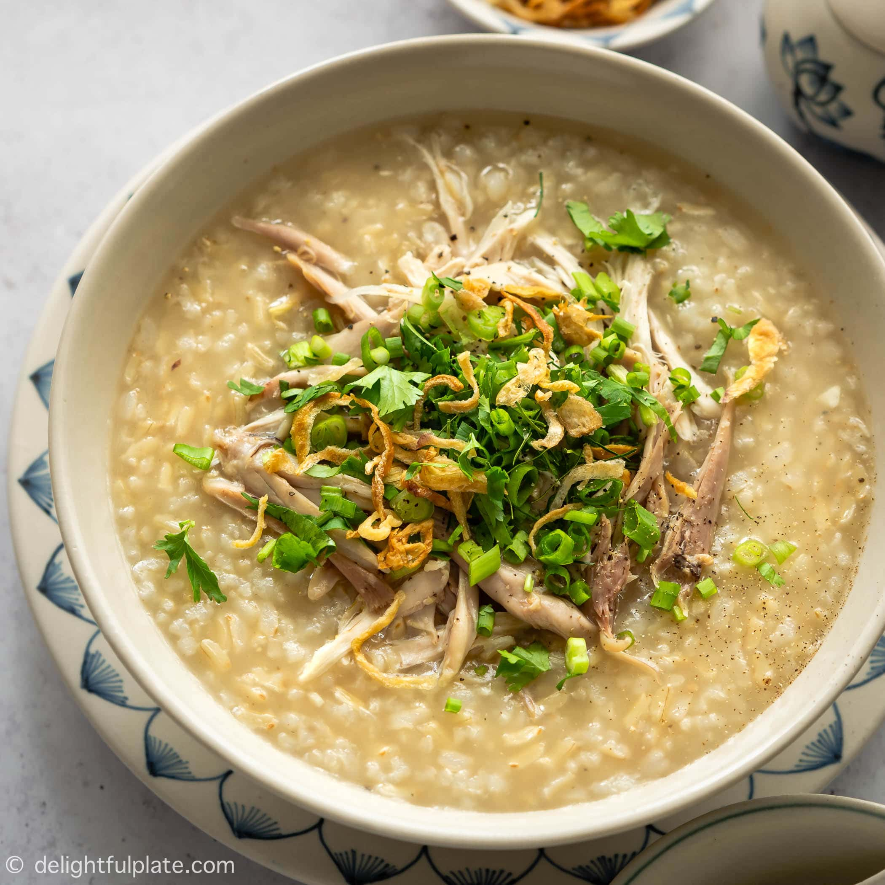

Odin Recipes
Congee with Chicken

A bowl of Congee with shredded chicken, fried onions, and scallions
This dish will give you a warm feeling similar to porridge. It originates in
China, and uses rice - the most accessible ingredient in the world.
Ingredients
- 500g dry rice
- 2 cups chicken stock
- 300g cooked chicken
Steps
- Boil a pot of water and add your rice to it
- You may optionally add some chicken stock to give more flavor
- Add your cooked chicken
- Let simmer for 1-2 hours
- The Congee should turn into a very soft consistency
- Top with scallions, fried onions, or parsley